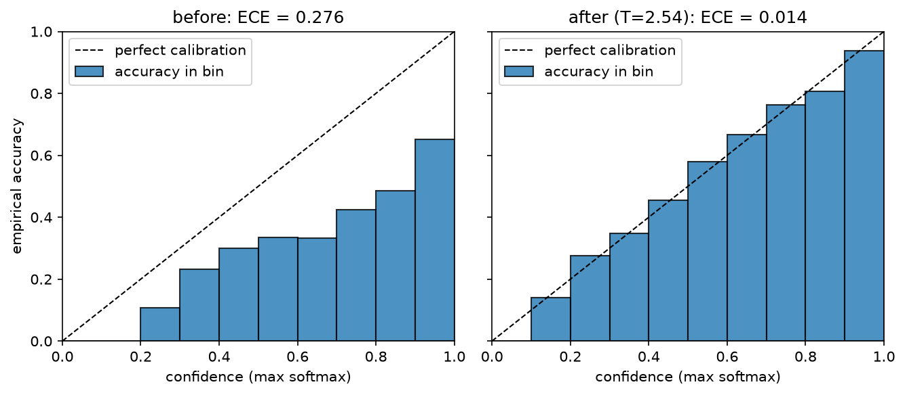
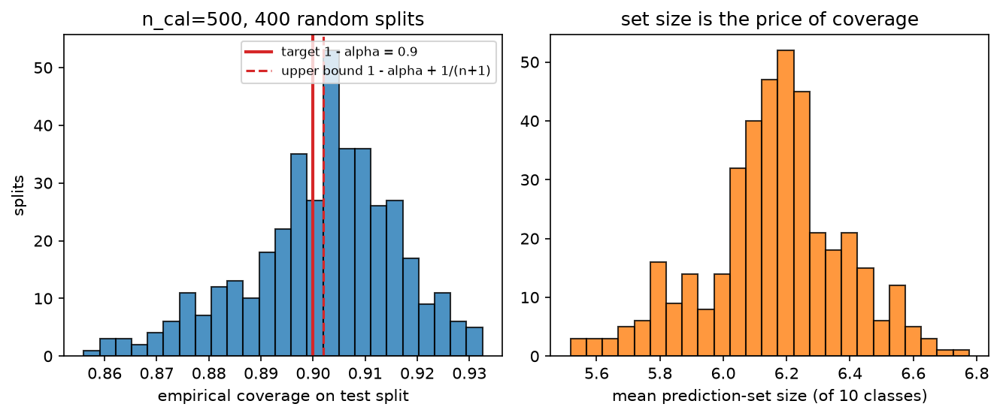
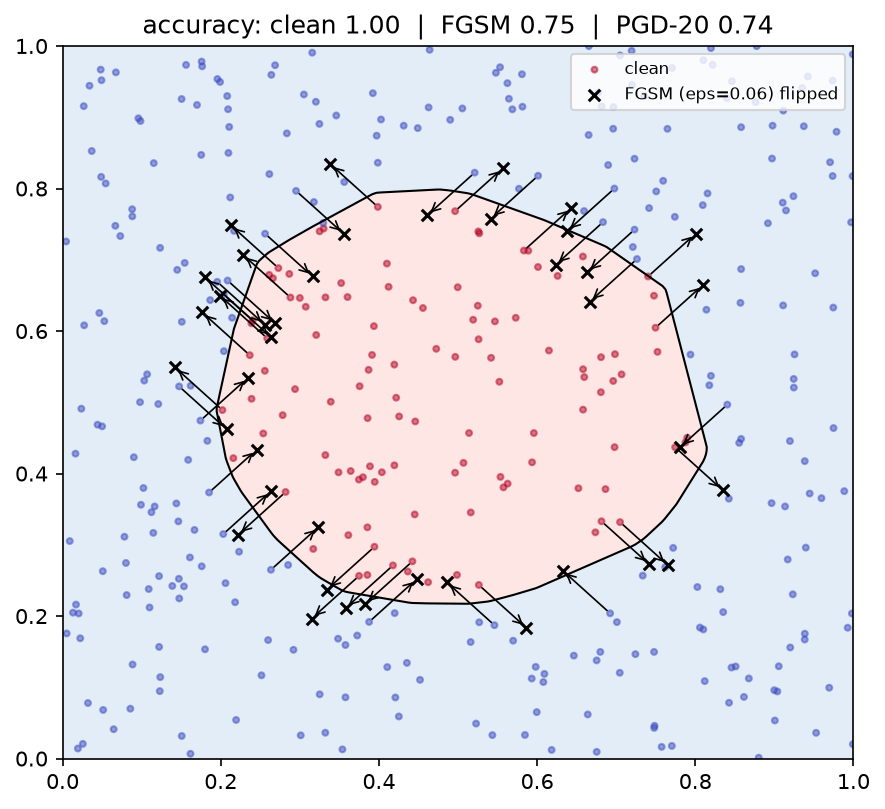

Uncertainty & reliability¶
Why this matters at staff level. Every shipped model meets inputs its training set never contained, and the question that decides whether the system is safe is not "how accurate is it?" but "does it know when it is wrong?". Autonomy, fintech and medical interviewers probe this directly, aleatoric vs epistemic, why softmax confidence is not uncertainty, what guarantee conformal prediction actually gives, and ML-systems rounds probe the production half: drift detection, shadow mode, canaries, uncertainty gating and fallback. Strong signal is deriving the heteroscedastic loss and the conformal coverage bound, then naming the operational mechanism that consumes the uncertainty.
TL;DR: the interview card¶
- Aleatoric uncertainty is noise in the data (irreducible with more data; reducible with better sensors/features). Epistemic is uncertainty about the model (reducible with more data). Predicting \(\mu\) and \(\log\sigma^2\) and minimising \(\frac12\log\sigma^2 + \frac{(y-\mu)^2}{2\sigma^2}\) learns aleatoric noise and gives free loss attenuation on noisy examples.
- With \(M\) stochastic members: total \(= H[\bar p]\), aleatoric \(= \frac1M\sum_m H[p_m]\), epistemic \(=\) mutual information \(\text{MI} = H[\bar p] - \frac1M\sum_m H[p_m] \ge 0\) (BALD). Members that disagree confidently → high MI; members that agree but are unsure → high aleatoric, zero MI.
- Softmax confidence is not uncertainty: it is a normalised score with no notion of "far from the data", it is systematically over-confident in modern networks, and a ReLU network's confidence goes to 1 far away from the data.
- \(\text{ECE} = \sum_b \frac{|B_b|}{N}\,\big|\text{acc}(B_b) - \text{conf}(B_b)\big|\). It is biased by binning (equal-width bins are mostly empty at low confidence), it is not a proper scoring rule, and a perfectly useless-but-calibrated model scores 0. Report reliability diagrams, ECE and Brier / NLL.
- Temperature scaling fits one scalar \(T\) on validation NLL: \(\softmax(z/T)\). It never changes the argmax, so accuracy is unchanged, and it usually removes most of the ECE.
- Deep ensembles beat MC dropout in practice because independent inits explore different loss-basins; MC dropout is an approximate variational posterior with a fixed, cheap approximating family.
- Split conformal: with exchangeable data, score \(s(x,y)\), calibration scores \(s_1..s_n\) and \(\hat q\) the \(\lceil (n+1)(1-\alpha)\rceil\)-th smallest, \(C(x) = \{y : s(x,y) \le \hat q\}\) satisfies \(1-\alpha \le P(Y \in C(X)) \le 1-\alpha+\frac{1}{n+1}\), distribution-free, finite-sample, marginal (not conditional) coverage.
- OOD scores, larger = more in-distribution: max-softmax (weak), energy \(T\log\sum_k e^{z_k/T}\) (uses logit magnitude, which softmax throws away), Mahalanobis on penultimate features (uses the feature geometry).
- Shift taxonomy: covariate shift \(p(x)\) changes, \(p(y|x)\) fixed (fix: importance weighting); label shift \(p(y)\) changes, \(p(x|y)\) fixed (fix: prior correction); concept drift \(p(y|x)\) changes (fix: retrain, no reweighting can save you).
- FGSM: \(x + \epsilon\,\text{sign}(\nabla_x L)\). PGD: iterate with step \(\alpha\) and project onto the \(\epsilon\)-ball. Adversarial training solves \(\min_\theta \E \max_{\delta} L\), costs \(k{+}1\) passes per step, and trades clean accuracy for robust accuracy.
1. Intuition first¶
Three pictures, one sentence each; if you can draw them you can answer most of this chapter.
A coin and a die. A fair coin has irreducible aleatoric uncertainty: even with infinite data, \(H = \log 2\). A die you have never rolled has epistemic uncertainty: you do not know its bias, and 1000 rolls fix that. A model trained on 10 million images of daylight roads and shown a snowstorm has epistemic uncertainty; a model asked to classify a genuinely ambiguous 50/50 blur has aleatoric uncertainty. The action differs: epistemic → collect data, abstain, hand over to a human; aleatoric → improve the sensor, or accept the error rate and design the system around it.
Three ensemble members on one input.
| case | \(p_1\) | \(p_2\) | \(p_3\) | \(\bar p\) | \(H[\bar p]\) | \(\overline{H[p_m]}\) | MI |
|---|---|---|---|---|---|---|---|
| confident agreement | (.99,.01) | (.98,.02) | (.99,.01) | (.99,.01) | 0.06 | 0.06 | ≈0 |
| uncertain agreement | (.5,.5) | (.5,.5) | (.5,.5) | (.5,.5) | 0.69 | 0.69 | 0 |
| confident disagreement | (1,0) | (0,1) | (1,0) | (.67,.33) | 0.64 | 0 | 0.64 |
Row 2 and row 3 have similar total entropy and completely different meanings. Only the decomposition tells them apart, and only row 3 says "this input is unlike my training data, do not act on it". (Entropies in nats.)
A network's confidence far from the data. Take a 2-layer ReLU classifier trained on a disc. Walk away from the data in any direction: the logits grow linearly (ReLU nets are piecewise linear, so far away the largest logit dominates), and the softmax saturates to 1.0. The model is maximally confident in regions it has never seen. This is not a bug you can prompt away. It is the geometry of the function class, and it is why OOD detection needs something other than the softmax.

Left: an over-confident model, every bar sits below the diagonal, meaning accuracy is lower than confidence. Right: after fitting a single temperature on a validation split, the bars snap to the diagonal and ECE drops by an order of magnitude. Accuracy is identical in both panels: only the confidences moved.
2. The math¶
2.1 Aleatoric vs epistemic, and the heteroscedastic regression loss¶
Write the predictive distribution with a posterior over weights:
The inner term is noise the model cannot remove at fixed \(\theta\); the spread of \(p(\theta\mid\mathcal D)\) is what more data shrinks.
Heteroscedastic Gaussian likelihood. Let the network output two heads, \(\mu_\theta(x)\) and \(s_\theta(x) = \log\sigma^2_\theta(x)\) (predict the log variance so positivity is free and the scale is stable). For one observation,
Dropping the constant gives the loss you must be able to write instantly:
What it means. Two gradients tell the story. With respect to \(\mu\):
so squared error on example \(i\) is attenuated by \(1/\sigma_i^2\), the network can "explain away" a hard example by raising its predicted variance instead of distorting \(\mu\) to fit it. That is exactly what you want with label noise, and exactly what makes naive MSE fragile. With respect to \(s\):
the optimum sets the predicted variance to the squared residual, so \(\sigma^2\) is the model's estimate of the local noise. The \(\frac12\log\sigma^2\) term is the regulariser that stops the model from declaring infinite variance everywhere (which would zero the second term). This is the "learned loss attenuation" of Kendall & Gal (2017), and the implementation's test checks the gradient \(\partial\mathcal L/\partial s = -1.5\) at \(\mu=0, y=2, s=0\) against autograd.
For classification the aleatoric term is already in the softmax: \(H[p(y|x,\theta)]\). Epistemic uncertainty needs several \(\theta\).
2.2 Predictive entropy, mutual information (BALD)¶
With \(M\) members \(\theta_1..\theta_M\) (ensemble or MC dropout samples), \(p_m = p(y|x,\theta_m)\) and \(\bar p = \frac1M\sum_m p_m\):
The last term is \(I(y;\theta \mid x)\), the mutual information between the label and the parameters. It is non-negative by concavity of entropy (Jensen: \(H[\E_\theta p] \ge \E_\theta H[p]\)), and it is zero exactly when all members agree. Interpretation: how much would observing this label teach me about the parameters?, which is why BALD (Houlsby et al. 2011) uses it as the acquisition function in active learning: label the points whose labels are most informative about \(\theta\).
Numerically, clip at 0: floating-point can give \(-10^{-16}\) and a downstream log will complain.
2.3 Calibration: ECE and its binning pitfalls¶
A model is calibrated if, among all predictions made with confidence \(c\), a fraction \(c\) are correct:
This is top-label calibration; the stronger multiclass (classwise) version asks the same of every class probability, and the strongest asks it of the full vector. Say which one you mean.
The quantity is a conditional expectation on a continuous variable, so you cannot estimate it without smoothing. Binning confidences into \(B\) bins \(B_1..B_B\):
and MCE replaces the weighted sum with a max. Five pitfalls to name:
- Binning bias. ECE is a biased, inconsistent estimator: with few bins, errors inside a bin cancel and ECE is under-estimated; with many bins, each bin is noisy and ECE is over-estimated. The estimate has no fixed relationship to the true calibration error, so ECE values across papers with different \(B\) are not comparable.
- Equal-width bins are mostly empty. A modern classifier puts 90 % of its mass above
confidence 0.9; fifteen equal-width bins leave the first ten nearly empty and the
headline number is computed from two bins. Adaptive (equal-mass) binning fixes the
count, which is why the implementation provides
adaptive_ece. - Not a proper scoring rule. ECE can be gamed: a model that always predicts the base rate is perfectly calibrated and completely uninformative (ECE 0, accuracy = majority class). Always pair ECE with a proper score, Brier \(\frac1N\sum(\hat p_i - y_i)^2\) or NLL, which decomposes (Murphy) into calibration + refinement: you want good calibration and high refinement.
- Top-label only. Standard ECE looks at the max probability. A model can have ECE 0 at the top label and be badly wrong about the runner-up, which is what matters if you are building a prediction set.
- Sample size. ECE has a positive bias that shrinks as \(1/\sqrt{N}\) per bin; with
\(N = 1000\) and \(B = 15\), a "0.02 ECE" is within noise of 0. Bootstrap it
(
harness.ece_with_cidoes).
Temperature scaling (Guo et al. 2017). Fix the trained network; learn one scalar \(T > 0\) on a held-out validation set by minimising NLL of \(\softmax(z/T)\):
Because \(\softmax(z/T)\) is monotone in \(z\) for \(T>0\), the argmax and therefore accuracy are unchanged; only the sharpness moves. \(T > 1\) softens (fixes over-confidence, the usual direction), \(T<1\) sharpens. It is the simplest member of a family, Platt scaling (logistic on the logit), vector/matrix scaling (per-class \(a_k z_k + b_k\), more parameters, more overfitting), isotonic regression (non-parametric, needs more validation data), and histogram binning. Temperature scaling wins in practice because one parameter cannot overfit a validation set of a few thousand points, and because the dominant miscalibration of a modern network really is a single global sharpness factor.
Why modern networks are over-confident. Training minimises NLL long after classification error plateaus, so the optimiser keeps pushing logit margins apart on already-correct training points; capacity, lack of label smoothing, and weight decay schedules all push the same way. The model does not become more accurate, only more confident. This is also why label smoothing, mixup and focal loss improve calibration as a side effect.
2.4 Ensembles and MC dropout¶
Deep ensembles (Lakshminarayanan et al. 2017): train \(M\) copies from independent random initialisations (and independent data shuffling), average the predictive distributions. Why they work, in the order an interviewer wants to hear it:
- Different inits land in different loss basins with genuinely different functions off the data manifold, they disagree where there was no data, which is exactly where you want disagreement. (Random-seed diversity dominates; bagging the data is not needed and usually hurts because each member sees less data.)
- Averaging probabilities is a mixture, not a product: it can only increase entropy (\(H[\bar p]\ge\overline{H[p_m]}\)), so the ensemble is never more confident than its average member.
- Proper scoring rules decompose: the ensemble's NLL is bounded by the average member's NLL minus the diversity term (Jensen again), so diversity is free accuracy and free calibration.
Cost is the honest part of the answer: \(M\times\) training and \(M\times\) inference. In production you get most of the benefit from \(M=5\); cheaper approximations are snapshot ensembles (cyclic LR, save minima), BatchEnsemble / rank-1 factors, multi-head networks, and averaging predictions across test-time data augmentations.
MC dropout (Gal & Ghahramani 2016): keep dropout on at test time and average \(M\) stochastic passes. The derivation sketch: dropout training with weight decay minimises
which is the Monte-Carlo estimate of the negative ELBO of a variational distribution \(q(W)\) that is a mixture of two Gaussians per weight row, one centred at 0 (dropped) and one at the learned weight, with vanishing variances. Minimising the dropout objective is therefore approximate variational inference, and sampling dropout masks at test time samples \(q(W)\), giving
Caveats to state: the approximating family is fixed and very restrictive (its "posterior" does not concentrate with more data in the way a real posterior does), the uncertainty is sensitive to the dropout rate (which was tuned for regularisation, not for uncertainty) and it only reflects uncertainty in the layers that have dropout. It is cheap and better than nothing; deep ensembles are the stronger baseline and are what most production systems use when they can afford them.
2.5 Split conformal prediction: derive the guarantee¶
The result that makes conformal worth knowing: finite-sample, distribution-free coverage under exchangeability alone, no assumption about the model, the data distribution, or calibration.
Setup. A conformity score \(s(x,y) \in \R\), large = the pair fits badly. For classification, \(s(x,y) = 1 - \hat p_y(x)\); for regression, \(s(x,y) = |y - \hat\mu(x)|\). Hold out \(n\) calibration points not used to fit the model, compute \(s_i = s(x_i,y_i)\), and let
Theorem. If \((x_1,y_1),\dots,(x_n,y_n),(x_{n+1},y_{n+1})\) are exchangeable, then
Proof. Note \(y_{n+1} \in C(x_{n+1}) \iff s_{n+1} \le \hat q\). Exchangeability of the \(n+1\) pairs implies exchangeability of the scores \(s_1..s_{n+1}\), so the rank of \(s_{n+1}\) among all \(n+1\) scores is uniform on \(\{1,\dots,n+1\}\) (assume continuous scores so ties have probability 0; otherwise break ties at random). Let \(k = \lceil (n+1)(1-\alpha)\rceil\). Then \(s_{n+1} \le \hat q\), where \(\hat q\) is the \(k\)-th smallest of the other \(n\) scores, holds exactly when \(\text{rank}(s_{n+1}) \le k\), so
and since \(\lceil z\rceil < z+1\), the same quantity is \(< (1-\alpha) + \frac{1}{n+1}\). \(\square\)
Read the three consequences out loud in an interview:
- The guarantee is marginal, not conditional. \(P(y \in C(x))\) averages over \(x\). Coverage can be 99 % on easy inputs and 70 % on a hard subgroup while the average is 90 %. Fixes: Mondrian/group-conditional conformal (calibrate per group, which restores the guarantee within each group at the cost of \(n\) per group) and adaptive scores.
- The model quality shows up in the set size, not the coverage. A useless model still gets 90 % coverage, by returning nearly all classes. So report average set size (or interval width) next to coverage; that is the metric that improves when the model improves.
- \(\hat q\) can be \(+\infty\). If \(\lceil (n+1)(1-\alpha)\rceil > n\), i.e. \(n < \frac{1}{\alpha} - 1\), no finite quantile achieves the level: you need at least \(n \ge \frac{1}{\alpha}-1\) calibration points (e.g. \(n \ge 19\) for \(\alpha = 0.05\), and hundreds for a tight, low-variance \(\hat q\)).
Better scores. For classification, \(1 - \hat p_y\) produces small sets but poor conditional coverage; APS (adaptive prediction sets) uses the cumulative sorted probability mass until the true label is included, and RAPS adds a regularisation term that penalises long tails, trading a little size for much better conditional behaviour. For regression, conformalised quantile regression (CQR) uses a quantile model's \([\hat q_{\alpha/2}, \hat q_{1-\alpha/2}]\) and conformalises the residual, giving adaptive-width intervals instead of the constant-width \(\hat\mu \pm \hat q\).
Exchangeability is the assumption that breaks. Time series, feedback loops and any distribution shift violate it; the remedies are weighted conformal (importance weights for covariate shift) and adaptive conformal inference (update \(\alpha\) online to track realised coverage).

Left: empirical coverage over 400 random calibration/test splits, centred on the nominal \(1-\alpha = 0.9\) with the finite-sample spread; the dashed line is the upper bound \(1-\alpha+1/(n+1)\). Right: average prediction-set size, the number that actually improves when the model gets better.
2.6 OOD detection¶
Why softmax confidence fails. Softmax is shift-invariant: \(\softmax(z) = \softmax(z + c\mathbf 1)\), so the magnitude of the logits, the thing that carries "how strongly does any class fire", is discarded. A far-OOD input with logits \((0.1, 0.0)\) and a confident in-distribution input with logits \((10, 0)\) can both map to high confidence after training pushes margins apart; worse, for ReLU networks, Hein et al. (2019) proved that scaling any input far enough gives arbitrarily high confidence. Confidence is a relative score among the known classes, and "none of the above" is not one of them.
Energy score (Liu et al. 2020). Define the free energy of the logit vector \(E(x) = -T\log\sum_k e^{z_k/T}\) and score \(-E(x) = T\log\sum_k e^{z_k/T}\) (larger = more in-distribution). The link to the softmax:
so the energy is the max-logit plus the log-softmax: it keeps exactly the magnitude information the softmax throws away. Under an energy-based reading of the classifier, \(-E(x)\) is (up to a constant) the log of the unnormalised joint density \(\sum_k e^{z_k} \propto p(x)\), so it is an estimate of the density, which is what OOD detection wants.
Mahalanobis (Lee et al. 2018). Fit class-conditional Gaussians to penultimate features \(f(x) \in \R^d\) with a shared covariance,
and score \(-\min_k (f(x)-\hat\mu_k)^\top \hat\Sigma^{-1}(f(x)-\hat\mu_k)\). This is the log density of the closest class-conditional Gaussian up to constants, i.e. a generative model bolted onto a discriminative network. It detects feature-space outliers that the logits smooth over, and it is the method of choice when you can afford one pass over the training set at deployment time. Practical notes: regularise \(\hat\Sigma\) (the implementation adds \(\lambda I\)), use the penultimate layer or an ensemble of layers, and re-fit whenever the backbone changes.
Evaluating OOD detection is a binary detection problem, so it inherits everything in Evaluation §2.2: report AUROC, plus FPR@95%TPR (the fraction of OOD inputs admitted when you keep 95 % of in-distribution traffic), which is the number the ops team cares about. Beware "near-OOD vs far-OOD": every method looks great separating CIFAR-10 from noise and much worse separating CIFAR-10 from CIFAR-100.
2.7 Distribution shift: three kinds, and what to do about each¶
Let training have joint \(p_{\text{tr}}(x,y)\) and deployment \(p_{\text{te}}(x,y)\).
| Shift | What changes | What is fixed | Detect with | Fix with |
|---|---|---|---|---|
| Covariate | \(p(x)\) | \(p(y\mid x)\) | KS / MMD / C2ST on inputs or features | importance weights \(w(x) = \frac{p_{\text{te}}(x)}{p_{\text{tr}}(x)}\) in the loss |
| Label (prior) | \(p(y)\) | \(p(x\mid y)\) | shift in predicted-label distribution (BBSE/EM) | re-weight the prior: $p'(y |
| Concept | \(p(y\mid x)\) | possibly \(p(x)\) | performance drop with labels; delayed feedback | retrain / continual learning: reweighting cannot help |
Importance weighting, derived. For covariate shift, the target risk is
so training on source data weighted by \(w(x)\) is unbiased for the target risk, provided \(p(y|x)\) really is unchanged and \(w\) has finite variance (it explodes when the supports barely overlap; clip the weights and report the effective sample size \((\sum w)^2/\sum w^2\)).
Estimating \(w\) without densities. Train a classifier to separate source from target; if \(\hat d(x) \approx P(\text{target}\mid x)\) then by Bayes
which is exactly what drift.importance_weights computes. The same classifier is the
classifier two-sample test (C2ST): if held-out accuracy is significantly above 0.5,
the two samples come from different distributions, and a one-sided binomial test on
\(n_{\text{test}}\) gives the p-value. It is more powerful than per-feature tests in high
dimensions because it can find multivariate differences that no marginal reveals.
Two-sample tests. The KS statistic \(\sup_x|F_a(x)-F_b(x)|\) with the asymptotic
\(P(K>\lambda) = 2\sum_{j\ge1}(-1)^{j-1}e^{-2j^2\lambda^2}\), \(\lambda = D\sqrt{\frac{nm}{n+m}}\),
is the univariate workhorse (our test checks it against scipy.stats.ks_2samp). It is
per-feature, so with 500 features you must correct for multiplicity (Bonferroni or BH) or
you will alarm daily. PSI (population stability index) is the industry's rule-of-thumb
cousin: \(\sum_b (c_b - r_b)\log\frac{c_b}{r_b}\), a symmetrised KL over quantile bins, with
the folklore thresholds 0.1 (investigate) and 0.25 (act). MMD with a kernel is the
principled multivariate option. For images/text, run the test on embeddings, not raw
pixels or tokens.
2.8 Adversarial examples¶
FGSM (Goodfellow et al. 2015). Linearise the loss around \(x\): \(L(x+\delta) \approx L(x) + \nabla_x L^\top \delta\). Maximise subject to \(\norm{\delta}_\infty \le \epsilon\). The maximiser of a linear function over the \(\ell_\infty\) ball puts every coordinate at its extreme with the sign of the gradient:
with \(\nabla_x L^\top\delta^\star = \epsilon\norm{\nabla_x L}_1\), the increase grows with the \(\ell_1\) norm of the gradient, i.e. with dimension. That is the "adversarial examples are a consequence of linearity in high dimensions" argument: a tiny per-pixel change, summed over \(d\) pixels, is a large change in the logit.
PGD (Madry et al. 2018) drops the linear approximation and does projected gradient ascent inside the ball:
where \(\Pi\) is the elementwise clip to \([x-\epsilon, x+\epsilon]\) (and then to the valid pixel range). The random start matters: it avoids the degenerate single-point evaluation that gradient masking can exploit, and repeating with several restarts is the standard strength knob. PGD with enough steps is the canonical "strongest first-order attack", and a defence that survives FGSM but not PGD is a defence that merely obfuscated gradients.
Adversarial training solves the saddle-point problem
Inner max by PGD-\(k\), outer min by SGD on the adversarial batch. Cost: \(k{+}1\) forward/backward passes per step, so roughly \(8\)–\(10\times\) standard training at \(k=7\).
The robustness–accuracy trade-off is real, not an artefact: Tsipras et al. (2019) construct a distribution where the most accurate classifier and the most robust classifier are provably different, because robustness forces the model to discard weakly-correlated but genuinely predictive features. Empirically, robust CIFAR-10 models give up single-digit to low-double-digit clean accuracy. State this as a design decision: for a perception stack, the relevant threat model is usually physical (stickers, printed patches, projections, adversarial road markings) rather than \(\ell_\infty\)-bounded digital noise, so \(\ell_\infty\) adversarial training may be the wrong spend, input diversity, sensor redundancy and anomaly detection buy more. Physical-world attacks to know: Eykholt et al. (2018) "Robust Physical-World Attacks" (stickers on stop signs fooling a classifier across viewpoints), Brown et al. (2017) adversarial patches (a printable patch that dominates the prediction regardless of scene), and Athalye et al. (2018) synthesised 3D-printed objects misclassified across transformations.

A 2-D classifier trained to separate a disc from its surroundings. Arrows show the \(\epsilon = 0.06\) FGSM step; every crossed point flipped class. Note that the flipped points are precisely those near the boundary, and that PGD flips slightly more with the same \(\epsilon\) budget.
3. Implementation¶
src/mlbook/reliability/, NumPy for the statistics, PyTorch where gradients are needed.
3.1 ECE and temperature scaling¶
def expected_calibration_error(probs, labels, n_bins=15):
conf = probs.max(axis=1) # (N,)
pred = probs.argmax(axis=1) # (N,)
correct = (pred == labels).astype(float) # (N,)
edges = np.linspace(0.0, 1.0, n_bins + 1) # (B+1,)
idx = np.clip(np.digitize(conf, edges[1:-1]), 0, n_bins - 1) # (N,) bin of each example
ece, mce = 0.0, 0.0
for b in range(n_bins):
m = idx == b
if m.sum() == 0:
continue
gap = abs(correct[m].mean() - conf[m].mean())
ece += m.sum() / len(conf) * gap
mce = max(mce, gap)
return float(ece), float(mce), {...}
np.digitize(conf, edges[1:-1]) uses the interior edges so that confidence exactly 1.0
lands in the last bin rather than out of range, the off-by-one that silently drops your
most confident predictions. The returned bins dict feeds the reliability diagram.
class TemperatureScaling(nn.Module):
def __init__(self):
super().__init__()
self.log_t = nn.Parameter(torch.zeros(1)) # (1,) log T, so T = 1 at init and T > 0 always
def forward(self, logits: torch.Tensor) -> torch.Tensor:
return logits / self.log_t.exp() # (N, K)
def fit(self, logits, labels, max_iter=100):
logits = logits.detach()
opt = torch.optim.LBFGS([self.log_t], lr=0.1, max_iter=max_iter, line_search_fn="strong_wolfe")
def closure():
opt.zero_grad()
loss = nn.functional.cross_entropy(self.forward(logits), labels) # scalar
loss.backward()
return loss
opt.step(closure)
return self
Parametrising \(T = e^{\tau}\) keeps \(T\) positive without a constraint, and LBFGS with a
strong-Wolfe line search converges in one step call on this 1-D problem. Fit on
validation logits, never on train or test.
How you'd test it. tests/test_reliability_calibration.py builds logits from a known
distribution, multiplies them by 3 to manufacture over-confidence, and checks the fitted
temperature recovers \(3.0 \pm 0.3\), that NLL decreases, that ECE decreases, and that
argmax is bit-identical before and after (the accuracy-invariance claim).
3.2 Entropy, mutual information, ensembles, MC dropout¶
def predictive_entropy(P: np.ndarray) -> np.ndarray:
return entropy(P.mean(axis=0)) # (N,) P is (M, N, K)
def expected_entropy(P: np.ndarray) -> np.ndarray:
return entropy(P).mean(axis=0) # (N,)
def mutual_information(P: np.ndarray) -> np.ndarray:
return np.clip(predictive_entropy(P) - expected_entropy(P), 0.0, None) # (N,)
The (M, N, K) convention (members, examples, classes) is worth fixing in your head:
mean(axis=0) is "average the members", entropy(...) reduces the last axis.
def enable_mc_dropout(model: nn.Module) -> None:
model.eval()
for m in model.modules():
if isinstance(m, nn.Dropout):
m.train()
This is the line people get wrong: model.train() would also put BatchNorm into batch-statistics
mode, which changes predictions for a reason that has nothing to do with uncertainty. Only
Dropout goes back to train mode.
3.3 Split conformal¶
def conformal_quantile(scores: np.ndarray, alpha: float) -> float:
n = len(scores)
k = int(np.ceil((n + 1) * (1.0 - alpha))) # rank of the score we need
if k > n:
return float(np.inf) # not enough calibration points for this alpha
return float(np.sort(scores)[k - 1]) # k-th smallest score
class SplitConformalClassifier:
def calibrate(self, probs_cal, y_cal):
scores = 1.0 - probs_cal[np.arange(len(y_cal)), y_cal] # (n,) conformity of the true label
self.q_hat = conformal_quantile(scores, self.alpha)
return self
def predict_sets(self, probs):
return (1.0 - probs) <= self.q_hat # (N, K) boolean membership
The \(\lceil (n+1)(1-\alpha)\rceil\)-th order statistic, not np.quantile, the \(+1\) is
the whole finite-sample correction and using a plain empirical quantile silently loses the
guarantee. Returning \(\infty\) (i.e. "predict everything") when \(n\) is too small is the
honest behaviour.
How you'd test it. tests/test_reliability_conformal.py checks the quantile against
hand-computed ranks, then runs the classifier at \(\alpha \in \{0.05, 0.2\}\) on 4 000 test
points and asserts empirical coverage lands in \([1-\alpha-0.03,\; 1-\alpha+0.04]\), and does
the same for the regressor with heavy-tailed (\(t_3\)) noise, the point being that the
guarantee does not care about the noise distribution.
3.4 OOD scores¶
def energy_score(logits: np.ndarray, T: float = 1.0) -> np.ndarray:
return T * _logsumexp(logits / T, axis=1) # (N,) larger = more in-distribution
class MahalanobisDetector:
def fit(self, F: np.ndarray, y: np.ndarray):
K = int(y.max()) + 1
self.means = np.stack([F[y == k].mean(axis=0) for k in range(K)]) # (K, d)
centred = F - self.means[y] # (N, d) subtract each point's own class mean
cov = centred.T @ centred / len(F) + self.reg * np.eye(F.shape[1]) # (d, d) shared covariance
self.prec = np.linalg.inv(cov) # (d, d)
return self
def score(self, F: np.ndarray) -> np.ndarray:
diff = F[:, None, :] - self.means[None, :, :] # (N, K, d)
m2 = np.einsum("nkd,de,nke->nk", diff, self.prec, diff) # (N, K)
return -m2.min(axis=1) # (N,)
The einsum string, term by term: n indexes examples, k classes, d and e the two
feature axes of the precision matrix; nkd,de,nke->nk contracts
\(\text{diff}^\top \Sigma^{-1}\text{diff}\) for each (example, class) pair, leaving (N, K).
Every score in this module is oriented larger = more in-distribution, so they can be fed
directly to roc_auc with in-distribution as the positive class, which is exactly what
the test does, asserting AUROC > 0.99 on well-separated blobs.
3.5 FGSM / PGD¶
def input_gradient(model, x, y):
x = x.clone().detach().requires_grad_(True) # (N, ...) leaf with grad
loss = nn.functional.cross_entropy(model(x), y) # scalar
(grad,) = torch.autograd.grad(loss, x) # (N, ...) dL/dx
return grad
def pgd(model, x, y, eps, alpha, n_steps, clip=(0.0, 1.0), random_start=True):
x_adv = x.clone().detach() # (N, ...)
if random_start:
x_adv = x_adv + torch.empty_like(x_adv).uniform_(-eps, eps) # (N, ...)
for _ in range(n_steps):
grad = input_gradient(model, x_adv, y) # (N, ...)
x_adv = x_adv + alpha * grad.sign() # (N, ...) ascent step
x_adv = torch.max(torch.min(x_adv, x + eps), x - eps) # project onto the L-inf ball
if clip is not None:
x_adv = x_adv.clamp(*clip)
return x_adv.detach()
torch.autograd.grad(loss, x) differentiates with respect to the input, leaving
parameter gradients untouched, the thing to say out loud when an interviewer asks how an
attack differs from a training step. The projection is two elementwise clips: first onto
the \(\epsilon\)-ball, then onto the valid input range (order matters; clipping to \([0,1]\)
last guarantees a valid image).
How you'd test it. tests/test_reliability_adversarial.py checks input_gradient
against a central finite difference, that FGSM respects the \(\epsilon\) bound and raises
the loss, that PGD is at least as strong as FGSM at the same \(\epsilon\), and that
adversarial training lowers the PGD loss on a fixed evaluation attack.
3.6 Drift¶
def ks_statistic(a: np.ndarray, b: np.ndarray) -> float:
a, b = np.sort(a), np.sort(b)
grid = np.concatenate([a, b]) # (n+m,) every observed value is a candidate sup point
Fa = np.searchsorted(a, grid, side="right") / len(a) # (n+m,) empirical CDF of a
Fb = np.searchsorted(b, grid, side="right") / len(b) # (n+m,)
return float(np.max(np.abs(Fa - Fb)))
def classifier_two_sample_test(X_ref, X_cur, test_frac=0.5, seed=0):
X = np.concatenate([X_ref, X_cur]) # (N, d)
y = np.concatenate([np.zeros(len(X_ref)), np.ones(len(X_cur))]) # (N,)
X = (X - X.mean(0)) / (X.std(0) + 1e-8) # (N, d) standardise
... # split, fit logistic regression, held-out accuracy
z = (acc - 0.5) / np.sqrt(0.25 / n_test) # binomial z under H0: acc = 0.5
return {"accuracy": acc, "z": float(z), "p_value": ...}
The sup of \(|F_a - F_b|\) is attained at one of the observed points, so evaluating both
CDFs on the pooled sorted grid is exact, not an approximation. The tests check the
statistic and the asymptotic p-value against scipy.stats.ks_2samp, and check that the
C2ST separates a mean-shifted sample (\(p < 0.01\)) while staying near chance on an
identically distributed one.
Full implementation: src/mlbook/reliability/calibration.py
"""Calibration: ECE / MCE, reliability-diagram bins, and temperature scaling.
ECE = sum_b (|B_b| / N) | acc(B_b) - conf(B_b) | over confidence bins B_b.
Temperature scaling (Guo et al. 2017) fits one scalar T > 0 minimising the NLL
of softmax(z / T) on a held-out validation set. It changes confidence, never the
argmax, so accuracy is unchanged.
"""
from __future__ import annotations
import numpy as np
import torch
from torch import nn
def expected_calibration_error(
probs: np.ndarray, labels: np.ndarray, n_bins: int = 15
) -> tuple[float, float, dict]:
"""Top-label ECE and MCE with equal-width bins.
probs (N, K) softmax outputs, labels (N,). Returns (ece, mce, bins) where bins
holds per-bin confidence, accuracy and count for a reliability diagram.
"""
conf = probs.max(axis=1) # (N,)
pred = probs.argmax(axis=1) # (N,)
correct = (pred == labels).astype(float) # (N,)
edges = np.linspace(0.0, 1.0, n_bins + 1) # (B+1,)
idx = np.clip(np.digitize(conf, edges[1:-1]), 0, n_bins - 1) # (N,)
ece, mce = 0.0, 0.0
bin_conf = np.full(n_bins, np.nan)
bin_acc = np.full(n_bins, np.nan)
bin_count = np.zeros(n_bins, dtype=int)
N = len(conf)
for b in range(n_bins):
m = idx == b
bin_count[b] = m.sum()
if bin_count[b] == 0:
continue
bin_conf[b] = conf[m].mean()
bin_acc[b] = correct[m].mean()
gap = abs(bin_acc[b] - bin_conf[b])
ece += bin_count[b] / N * gap
mce = max(mce, gap)
return float(ece), float(mce), {"conf": bin_conf, "acc": bin_acc, "count": bin_count, "edges": edges}
def adaptive_ece(probs: np.ndarray, labels: np.ndarray, n_bins: int = 15) -> float:
"""ECE with equal-mass bins (each bin holds N / n_bins examples), which avoids
the empty-high-confidence-bin pathology of equal-width binning."""
conf = probs.max(axis=1) # (N,)
correct = (probs.argmax(axis=1) == labels).astype(float) # (N,)
order = np.argsort(conf)
ece = 0.0
for chunk in np.array_split(order, n_bins):
if chunk.size == 0:
continue
ece += chunk.size / len(conf) * abs(correct[chunk].mean() - conf[chunk].mean())
return float(ece)
class TemperatureScaling(nn.Module):
"""Divide logits by a learned scalar temperature. (N, K) -> (N, K)."""
def __init__(self) -> None:
super().__init__()
self.log_t = nn.Parameter(torch.zeros(1)) # (1,) log T, T = 1 at init
@property
def temperature(self) -> float:
return float(self.log_t.detach().exp())
def forward(self, logits: torch.Tensor) -> torch.Tensor:
return logits / self.log_t.exp() # (N, K)
def fit(self, logits: torch.Tensor, labels: torch.Tensor, max_iter: int = 100) -> "TemperatureScaling":
"""Minimise validation NLL over T with L-BFGS. logits (N, K), labels (N,)."""
logits = logits.detach()
opt = torch.optim.LBFGS([self.log_t], lr=0.1, max_iter=max_iter, line_search_fn="strong_wolfe")
def closure():
opt.zero_grad()
loss = nn.functional.cross_entropy(self.forward(logits), labels)
loss.backward()
return loss
opt.step(closure)
return self
Full implementation: src/mlbook/reliability/uncertainty.py
"""Uncertainty: heteroscedastic Gaussian NLL, predictive entropy, mutual
information (BALD), MC dropout and deep-ensemble prediction helpers.
Given M stochastic forward passes p_m = p(y | x, theta_m), m = 1..M, with mean
p_bar = (1/M) sum_m p_m:
total uncertainty H[p_bar]
aleatoric (expected) (1/M) sum_m H[p_m]
epistemic (MI / BALD) H[p_bar] - (1/M) sum_m H[p_m] >= 0
"""
from __future__ import annotations
import numpy as np
import torch
from torch import nn
def heteroscedastic_gaussian_nll(mu: torch.Tensor, log_var: torch.Tensor, y: torch.Tensor) -> torch.Tensor:
"""Per-example NLL of N(y | mu, sigma^2) up to a constant:
0.5 * log sigma^2 + (y - mu)^2 / (2 sigma^2).
mu, log_var, y all (N,) or (N, 1). Returns the mean over examples."""
var = log_var.exp() # (N,)
return (0.5 * log_var + (y - mu) ** 2 / (2.0 * var)).mean()
def entropy(p: np.ndarray, eps: float = 1e-12) -> np.ndarray:
"""Shannon entropy (nats) along the last axis. (..., K) -> (...)."""
return -np.sum(p * np.log(p + eps), axis=-1)
def predictive_entropy(P: np.ndarray) -> np.ndarray:
"""P (M, N, K) stacked member probabilities -> H[mean_m p_m] of shape (N,)."""
return entropy(P.mean(axis=0)) # (N,)
def expected_entropy(P: np.ndarray) -> np.ndarray:
"""P (M, N, K) -> (1/M) sum_m H[p_m], shape (N,) (aleatoric part)."""
return entropy(P).mean(axis=0) # (N,)
def mutual_information(P: np.ndarray) -> np.ndarray:
"""BALD score: H[p_bar] - E_m H[p_m]. P (M, N, K) -> (N,)."""
return np.clip(predictive_entropy(P) - expected_entropy(P), 0.0, None) # (N,)
def enable_mc_dropout(model: nn.Module) -> None:
"""Put only Dropout layers in train mode (BatchNorm etc. stay in eval)."""
model.eval()
for m in model.modules():
if isinstance(m, nn.Dropout):
m.train()
@torch.no_grad()
def mc_dropout_predict(model: nn.Module, x: torch.Tensor, n_samples: int = 20) -> np.ndarray:
"""Stochastic forward passes with dropout on. x (N, d) -> probs (M, N, K)."""
enable_mc_dropout(model)
outs = [torch.softmax(model(x), dim=-1) for _ in range(n_samples)] # M x (N, K)
model.eval()
return torch.stack(outs, dim=0).numpy() # (M, N, K)
@torch.no_grad()
def ensemble_predict(models: list[nn.Module], x: torch.Tensor) -> np.ndarray:
"""Deep ensemble: one pass per member. x (N, d) -> probs (M, N, K)."""
for m in models:
m.eval()
outs = [torch.softmax(m(x), dim=-1) for m in models] # M x (N, K)
return torch.stack(outs, dim=0).numpy() # (M, N, K)
Full implementation: src/mlbook/reliability/conformal.py
"""Split conformal prediction (NumPy).
Given a conformity score s(x, y) (large = worse fit), calibration scores
s_1..s_n, and a miscoverage level alpha, set
q_hat = the ceil((n + 1)(1 - alpha)) / n empirical quantile of the scores
and predict C(x) = { y : s(x, y) <= q_hat }. Under exchangeability
1 - alpha <= P(Y_test in C(X_test)) <= 1 - alpha + 1/(n + 1).
"""
from __future__ import annotations
import numpy as np
def conformal_quantile(scores: np.ndarray, alpha: float) -> float:
"""Finite-sample-corrected quantile of calibration scores (n,)."""
n = len(scores)
k = int(np.ceil((n + 1) * (1.0 - alpha))) # rank of the score we need
if k > n:
return float(np.inf) # not enough calibration points for this alpha
return float(np.sort(scores)[k - 1]) # k-th smallest score
class SplitConformalClassifier:
"""Prediction sets from softmax scores with s(x, y) = 1 - p_y(x)."""
def __init__(self, alpha: float = 0.1) -> None:
self.alpha = alpha
self.q_hat: float = np.inf
def calibrate(self, probs_cal: np.ndarray, y_cal: np.ndarray) -> "SplitConformalClassifier":
"""probs_cal (n, K), y_cal (n,)."""
scores = 1.0 - probs_cal[np.arange(len(y_cal)), y_cal] # (n,)
self.q_hat = conformal_quantile(scores, self.alpha)
return self
def predict_sets(self, probs: np.ndarray) -> np.ndarray:
"""probs (N, K) -> boolean membership matrix (N, K)."""
return (1.0 - probs) <= self.q_hat # (N, K)
class SplitConformalRegressor:
"""Symmetric intervals mu(x) +/- q_hat with s = |y - mu(x)|."""
def __init__(self, alpha: float = 0.1) -> None:
self.alpha = alpha
self.q_hat: float = np.inf
def calibrate(self, mu_cal: np.ndarray, y_cal: np.ndarray) -> "SplitConformalRegressor":
scores = np.abs(y_cal - mu_cal) # (n,)
self.q_hat = conformal_quantile(scores, self.alpha)
return self
def predict_intervals(self, mu: np.ndarray) -> tuple[np.ndarray, np.ndarray]:
"""mu (N,) -> (lower (N,), upper (N,))."""
return mu - self.q_hat, mu + self.q_hat
def empirical_coverage_sets(sets: np.ndarray, y: np.ndarray) -> float:
"""sets (N, K) boolean, y (N,) -> fraction of rows whose set contains y."""
return float(np.mean(sets[np.arange(len(y)), y]))
def empirical_coverage_intervals(lo: np.ndarray, hi: np.ndarray, y: np.ndarray) -> float:
return float(np.mean((y >= lo) & (y <= hi)))
Full implementation: src/mlbook/reliability/ood.py
"""Out-of-distribution scores (NumPy): max-softmax, energy, Mahalanobis on features.
Convention: every score is oriented so that LARGER means MORE in-distribution.
max-softmax max_k softmax(z)_k
energy -E(z) = T * logsumexp(z / T) (Liu et al. 2020)
Mahalanobis -min_k (f - mu_k)^T Sigma^{-1} (f - mu_k) (Lee et al. 2018)
"""
from __future__ import annotations
import numpy as np
def _logsumexp(z: np.ndarray, axis: int = -1) -> np.ndarray:
m = z.max(axis=axis, keepdims=True)
return (m + np.log(np.sum(np.exp(z - m), axis=axis, keepdims=True))).squeeze(axis)
def max_softmax_score(logits: np.ndarray) -> np.ndarray:
"""logits (N, K) -> max softmax probability (N,)."""
z = logits - logits.max(axis=1, keepdims=True) # (N, K)
p = np.exp(z) / np.exp(z).sum(axis=1, keepdims=True) # (N, K)
return p.max(axis=1) # (N,)
def energy_score(logits: np.ndarray, T: float = 1.0) -> np.ndarray:
"""Negative free energy T * logsumexp(z / T). logits (N, K) -> (N,)."""
return T * _logsumexp(logits / T, axis=1) # (N,)
class MahalanobisDetector:
"""Class-conditional Gaussians with a shared covariance on penultimate features."""
def __init__(self, reg: float = 1e-3) -> None:
self.reg = reg
self.means: np.ndarray | None = None # (K, d)
self.prec: np.ndarray | None = None # (d, d)
def fit(self, F: np.ndarray, y: np.ndarray) -> "MahalanobisDetector":
"""F (N, d) features, y (N,) labels in [0, K)."""
K = int(y.max()) + 1
d = F.shape[1]
self.means = np.stack([F[y == k].mean(axis=0) for k in range(K)]) # (K, d)
centred = F - self.means[y] # (N, d)
cov = centred.T @ centred / len(F) + self.reg * np.eye(d) # (d, d)
self.prec = np.linalg.inv(cov) # (d, d)
return self
def score(self, F: np.ndarray) -> np.ndarray:
"""-min_k Mahalanobis^2. F (N, d) -> (N,)."""
assert self.means is not None and self.prec is not None
diff = F[:, None, :] - self.means[None, :, :] # (N, K, d)
m2 = np.einsum("nkd,de,nke->nk", diff, self.prec, diff) # (N, K): diff^T Sigma^-1 diff per class
return -m2.min(axis=1) # (N,)
Full implementation: src/mlbook/reliability/adversarial.py
"""Adversarial examples: FGSM and PGD (L-inf) in PyTorch, plus a tiny MLP for tests.
FGSM: x_adv = clip( x + eps * sign(grad_x L(f(x), y)) )
PGD: x_{t+1} = Proj_{B_eps(x)} ( x_t + alpha * sign(grad_x L(f(x_t), y)) ),
x_0 = x + Uniform(-eps, eps) (random start).
"""
from __future__ import annotations
import torch
from torch import nn
class TinyMLP(nn.Module):
"""2-layer MLP: (N, d_in) -> (N, K)."""
def __init__(self, d_in: int, d_hidden: int, n_classes: int) -> None:
super().__init__()
self.fc1 = nn.Linear(d_in, d_hidden)
self.fc2 = nn.Linear(d_hidden, n_classes)
def forward(self, x: torch.Tensor) -> torch.Tensor:
h = torch.relu(self.fc1(x)) # (N, d_hidden)
return self.fc2(h) # (N, K)
def input_gradient(model: nn.Module, x: torch.Tensor, y: torch.Tensor) -> torch.Tensor:
"""grad_x of cross-entropy loss. x (N, ...) -> (N, ...)."""
x = x.clone().detach().requires_grad_(True)
loss = nn.functional.cross_entropy(model(x), y)
(grad,) = torch.autograd.grad(loss, x) # (N, ...)
return grad
def fgsm(model: nn.Module, x: torch.Tensor, y: torch.Tensor, eps: float,
clip: tuple[float, float] | None = (0.0, 1.0)) -> torch.Tensor:
"""One-step L-inf attack. x (N, ...) -> x_adv (N, ...)."""
grad = input_gradient(model, x, y) # (N, ...)
x_adv = x + eps * grad.sign() # (N, ...)
if clip is not None:
x_adv = x_adv.clamp(*clip)
return x_adv.detach()
def pgd(model: nn.Module, x: torch.Tensor, y: torch.Tensor, eps: float, alpha: float,
n_steps: int, clip: tuple[float, float] | None = (0.0, 1.0), random_start: bool = True) -> torch.Tensor:
"""Iterative L-inf attack with projection onto the eps-ball around x."""
x_adv = x.clone().detach()
if random_start:
x_adv = x_adv + torch.empty_like(x_adv).uniform_(-eps, eps) # (N, ...)
for _ in range(n_steps):
grad = input_gradient(model, x_adv, y) # (N, ...)
x_adv = x_adv + alpha * grad.sign() # (N, ...)
x_adv = torch.max(torch.min(x_adv, x + eps), x - eps) # project onto L-inf ball
if clip is not None:
x_adv = x_adv.clamp(*clip)
return x_adv.detach()
def adversarial_training_step(model: nn.Module, opt: torch.optim.Optimizer, x: torch.Tensor,
y: torch.Tensor, eps: float, alpha: float, n_steps: int) -> float:
"""Madry-style min-max step: attack with PGD, then train on the adversarial batch."""
x_adv = pgd(model, x, y, eps, alpha, n_steps) # (N, ...)
opt.zero_grad()
loss = nn.functional.cross_entropy(model(x_adv), y)
loss.backward()
opt.step()
return float(loss.detach())
Full implementation: src/mlbook/reliability/drift.py
"""Drift detection (NumPy): two-sample KS test, population stability index,
classifier two-sample test (C2ST) with a from-scratch logistic regression, and
importance weights for covariate shift from the same classifier.
"""
from __future__ import annotations
import numpy as np
def ks_statistic(a: np.ndarray, b: np.ndarray) -> float:
"""Two-sample Kolmogorov-Smirnov statistic sup_x |F_a(x) - F_b(x)|. a (n,), b (m,)."""
a, b = np.sort(a), np.sort(b)
grid = np.concatenate([a, b]) # (n+m,)
Fa = np.searchsorted(a, grid, side="right") / len(a) # (n+m,)
Fb = np.searchsorted(b, grid, side="right") / len(b) # (n+m,)
return float(np.max(np.abs(Fa - Fb)))
def ks_pvalue(stat: float, n: int, m: int, terms: int = 100) -> float:
"""Asymptotic p-value: P(K > lambda) = 2 sum_{j>=1} (-1)^{j-1} exp(-2 j^2 lambda^2),
lambda = stat * sqrt(nm / (n + m))."""
lam = stat * np.sqrt(n * m / (n + m))
j = np.arange(1, terms + 1) # (terms,)
p = 2.0 * np.sum((-1.0) ** (j - 1) * np.exp(-2.0 * j**2 * lam**2))
return float(np.clip(p, 0.0, 1.0))
def population_stability_index(ref: np.ndarray, cur: np.ndarray, n_bins: int = 10, eps: float = 1e-6) -> float:
"""PSI = sum_b (cur_b - ref_b) ln(cur_b / ref_b) on quantile bins of the reference."""
edges = np.quantile(ref, np.linspace(0, 1, n_bins + 1)) # (B+1,)
edges[0], edges[-1] = -np.inf, np.inf
r = np.histogram(ref, edges)[0] / len(ref) + eps # (B,)
c = np.histogram(cur, edges)[0] / len(cur) + eps # (B,)
return float(np.sum((c - r) * np.log(c / r)))
def _fit_logreg(X: np.ndarray, y: np.ndarray, lr: float = 0.1, n_iters: int = 500, l2: float = 1e-3) -> tuple[np.ndarray, float]:
"""Gradient-descent logistic regression. X (N, d), y (N,) -> (w (d,), b)."""
N, d = X.shape
w, b = np.zeros(d), 0.0
for _ in range(n_iters):
p = 1.0 / (1.0 + np.exp(-(X @ w + b))) # (N,)
g = p - y # (N,) dL/dz for cross-entropy
w -= lr * (X.T @ g / N + l2 * w)
b -= lr * float(g.mean())
return w, b
def classifier_two_sample_test(
X_ref: np.ndarray, X_cur: np.ndarray, test_frac: float = 0.5, seed: int = 0
) -> dict[str, float]:
"""Train a classifier to tell reference from current; held-out accuracy far above 0.5
means the distributions differ. Returns accuracy and a one-sided binomial z-test p-value."""
rng = np.random.default_rng(seed)
X = np.concatenate([X_ref, X_cur]) # (N, d)
y = np.concatenate([np.zeros(len(X_ref)), np.ones(len(X_cur))]) # (N,)
mu, sd = X.mean(axis=0), X.std(axis=0) + 1e-8
X = (X - mu) / sd # (N, d) standardise
perm = rng.permutation(len(X))
n_test = int(len(X) * test_frac)
te, tr = perm[:n_test], perm[n_test:]
w, b = _fit_logreg(X[tr], y[tr])
acc = float(np.mean(((X[te] @ w + b) > 0) == y[te]))
# H0: accuracy = 0.5. z = (acc - 0.5) / sqrt(0.25 / n_test); p = P(Z > z).
z = (acc - 0.5) / np.sqrt(0.25 / n_test)
p = 0.5 * (1.0 - _erf(z / np.sqrt(2.0)))
return {"accuracy": acc, "z": float(z), "p_value": float(p)}
def importance_weights(X_ref: np.ndarray, X_cur: np.ndarray, X_query: np.ndarray) -> np.ndarray:
"""Density-ratio weights w(x) = p_cur(x) / p_ref(x) = (n_ref / n_cur) * p(cur|x) / p(ref|x),
estimated from a domain classifier. X_query (M, d) -> (M,)."""
X = np.concatenate([X_ref, X_cur])
y = np.concatenate([np.zeros(len(X_ref)), np.ones(len(X_cur))])
mu, sd = X.mean(axis=0), X.std(axis=0) + 1e-8
w, b = _fit_logreg((X - mu) / sd, y)
p = 1.0 / (1.0 + np.exp(-(((X_query - mu) / sd) @ w + b))) # (M,) P(cur | x)
return (len(X_ref) / len(X_cur)) * p / np.maximum(1.0 - p, 1e-8) # (M,)
def _erf(x: float) -> float:
"""Abramowitz-Stegun 7.1.26 approximation of erf (|error| < 1.5e-7)."""
sign = 1.0 if x >= 0 else -1.0
x = abs(x)
t = 1.0 / (1.0 + 0.3275911 * x)
poly = t * (0.254829592 + t * (-0.284496736 + t * (1.421413741 + t * (-1.453152027 + t * 1.061405429))))
return sign * (1.0 - poly * np.exp(-x * x))
Retype by hand¶
| Symbol | File | Target time | Test |
|---|---|---|---|
expected_calibration_error, adaptive_ece, TemperatureScaling (incl. fit) |
src/mlbook/reliability/calibration.py |
15 min | pytest tests/test_reliability_calibration.py -q |
heteroscedastic_gaussian_nll, entropy, predictive_entropy, expected_entropy, mutual_information, enable_mc_dropout |
src/mlbook/reliability/uncertainty.py |
15 min | pytest tests/test_reliability_uncertainty.py -q |
conformal_quantile, SplitConformalClassifier, SplitConformalRegressor |
src/mlbook/reliability/conformal.py |
15 min | pytest tests/test_reliability_conformal.py -q |
max_softmax_score, energy_score, MahalanobisDetector |
src/mlbook/reliability/ood.py |
15 min | pytest tests/test_reliability_ood.py -q |
input_gradient, fgsm, pgd |
src/mlbook/reliability/adversarial.py |
15 min | pytest tests/test_reliability_adversarial.py -q |
ks_statistic, classifier_two_sample_test |
src/mlbook/reliability/drift.py |
15 min | pytest tests/test_reliability_drift.py -q |
Read, do not retype: ks_pvalue (know the series exists), population_stability_index,
importance_weights, _fit_logreg, adversarial_training_step, mc_dropout_predict,
ensemble_predict (know the (M, N, K) convention cold).
4. Systems view: cost, failure modes, trade-offs¶
4.1 Which uncertainty method¶
| Method | Extra train cost | Extra inference cost | Gives you | Use when |
|---|---|---|---|---|
| Temperature scaling | one scalar on a val set | none | calibrated confidence | always: it is free; do this first |
| Heteroscedastic head | one extra output | none | per-input aleatoric \(\sigma^2\) | regression with input-dependent noise (depth, ETA, pose) |
| Deep ensemble (\(M\)=5) | \(5\times\) | \(5\times\) | epistemic + aleatoric, best quality | accuracy and uncertainty both matter and you can pay |
| MC dropout (\(M\)=20) | none (if already using dropout) | \(20\times\) | rough epistemic | cheap retrofit, non-critical decisions |
| Conformal | none (needs a held-out split) | negligible | guaranteed marginal coverage | you must promise a coverage level to a regulator or a downstream planner |
| Energy / Mahalanobis OOD | none / one pass over train | negligible / small | "is this input like training data" | input gating, data-collection triggers |
| Bayesian NN (VI/HMC) | \(\gg\) | \(\gg\) | principled posterior | research; rarely in production |
Decision rule. Temperature-scale everything. Add conformal when you need a guarantee. Add an ensemble when epistemic uncertainty drives an action (abstain, escalate, collect). Add an OOD score when the failure mode is "input unlike anything seen", which is a different question from "the model is unsure between two classes".
4.2 Turning uncertainty into a decision¶
Uncertainty that nothing consumes is a dashboard, not a safety mechanism. The four patterns:
- Selective prediction / gating. Abstain when confidence \(< \tau\) (or when the conformal set size \(> 1\), or the MI \(> \tau\)); route to a human, a slower model, or a conservative default. Report the risk–coverage curve: accuracy on the covered fraction versus that fraction. The right \(\tau\) comes from the cost of an error against the cost of an escalation, exactly as in Evaluation §2.1.
- Fallback. A degraded but safe behaviour: in perception, drop to a shorter-horizon plan or a lower speed; in a product, return the retrieval snippets instead of a generated answer.
- Redundancy. Independent sensors or models whose failures are uncorrelated, with a fusion rule that notices disagreement (see sensor fusion). The uncorrelated part is what earns the cost; two models trained on the same data with the same augmentations fail together.
- Escalation and logging. High-uncertainty inputs are the highest-value training data you will ever collect; wire the gate to an active-learning queue (MI is the BALD acquisition function, so the same number does both jobs).
4.3 Monitoring in production¶
Without labels you can still monitor a lot. Layer them by latency of signal:
| Signal | Latency | Catches |
|---|---|---|
| Input schema/range checks, null rates | seconds | broken upstream pipelines (the most common "model degradation") |
| Feature drift (KS/PSI per feature, C2ST on embeddings) | minutes–hours | covariate shift |
| Prediction distribution drift, mean confidence, abstention rate | minutes | label shift, silent model swaps |
| Proxy/business metrics (CTR, override rate, escalation rate) | hours–days | concept drift |
| Delayed labels (chargebacks, human review) | days–weeks | the truth |
Deployment mechanics. Shadow mode: run the new model on live traffic, serve the old one, compare distributions and disagreements. It catches integration bugs and drift with zero user risk and gives no outcome data. Canary: serve 1 % of traffic, watch guardrails (latency p99, error rate, safety-flag rate), ramp on a schedule with automatic rollback. A/B: the decision (see Evaluation §4.5). Alert on rates of change and on slice-level drift, not just global means; a global mean hides a broken camera on 2 % of the fleet. And set alert thresholds from historical variance (how often would this have fired last quarter?) or the on-call will mute them.
4.4 Safety-critical perception¶
For an autonomy stack, the relevant statement is not "the model is 99.9 % accurate" but "the system has a defined behaviour for every uncertainty state". The ingredients:
- Uncertainty gating with a defined fallback: unknown object or high epistemic uncertainty → treat as an obstacle with conservative dynamics rather than ignoring it. The "free space is unknown unless proven free" framing (occupancy/OOD-aware) is what makes an unrecognised object safe instead of invisible.
- Redundancy with diversity: camera + lidar + radar fail in different weather; independent model families fail on different inputs. Waymo's public safety-framework materials describe a layered approach with redundant sensing and independent fallback behaviours; Tesla's published talks describe the opposite bet (vision-only with fleet-scale data and a large data engine). Name both as engineering positions with different failure profiles, not as one being right.
- Operational design domain (ODD): define where the system is allowed to operate, detect leaving it (OOD on the scene, not just the object), and degrade.
- Triggers and data engine: log uncertainty-triggered snippets, mine them, label them, retrain. That loop is what converts field failures into training data.
- Validation: scenario-based testing plus corruption benchmarks plus per-slice metrics plus a residual-risk argument. A single mAP number is not a safety case.
4.5 Robustness testing you can actually run¶
- Corruption benchmarks. ImageNet-C/-P apply 15 corruption types at 5 severities (noise, blur, weather, digital) and report mean corruption error normalised to a baseline model. The point is that the corruptions are not seen in training, training on them turns the benchmark into a training set and voids the measurement.
- Natural distribution shift. ImageNet-R (renditions), ObjectNet (unusual poses and backgrounds), ImageNet-A (naturally adversarial). These are harder and more honest than synthetic noise.
- Metamorphic / invariance tests. The prediction should not change under transformations that preserve the label (paraphrase, crop, brightness); assert it.
- Slice-based evaluation. Pre-declare slices; fail the build if any critical slice regresses. This is the single highest-value reliability practice for most teams.
- Stress and chaos. Truncated inputs, empty inputs, duplicated frames, out-of-order timestamps, a dead sensor. Most production incidents are these, not adversarial noise.
4.6 Failure modes checklist¶
- Temperature fitted on the test set (leakage) or on the training set (no effect).
- Conformal calibrated on data the model trained on → coverage far below nominal.
- Conformal coverage reported globally while a subgroup is badly under-covered.
- MC dropout with BatchNorm accidentally in train mode.
- Ensemble members that share an initialisation or a data order → no diversity.
- OOD detector evaluated only against far-OOD noise, deployed against near-OOD.
- Drift alarms on 500 features with no multiplicity correction → alert fatigue.
- Importance weights with effective sample size of 12 out of 100 000.
- An uncertainty signal that no code path consumes.
5. In production¶
DeepMind / Google Brain: Deep Ensembles (Lakshminarayanan et al., NeurIPS 2017)
Problem. Bayesian neural networks gave better uncertainty than softmax but were hard to implement, slow, and sensitive to approximations, so they were not used in production. Built. A non-Bayesian baseline: train \(M\) networks from random initialisations with a proper scoring rule (NLL, optionally with adversarial training as smoothing) and average the predictive distributions. Result. Better calibration and much better behaviour under distribution shift than MC dropout, with an embarrassingly parallel implementation. Why it won. The diversity that matters comes from different loss basins, which random initialisation provides for free. Paper: "Simple and Scalable Predictive Uncertainty Estimation using Deep Ensembles", NeurIPS 2017, arXiv:1612.01474. The follow-up empirical study, "Can You Trust Your Model's Uncertainty? Evaluating Predictive Uncertainty Under Dataset Shift" (NeurIPS 2019, arXiv:1906.02530), is the one to cite for shifted data: every method degrades, ensembles degrade least.
Cornell / Berkeley: the conformal prediction tutorial (Angelopoulos & Bates)
Problem. Practitioners needed distribution-free uncertainty for already-trained black-box models without retraining or Bayesian machinery. Built/explained. Split conformal: a calibration set, a conformity score, one quantile, and a set-valued prediction with a finite-sample marginal coverage guarantee, plus the practical scores (APS, RAPS for classification, CQR for regression) and the honest caveats (marginal not conditional; exchangeability breaks under shift). Why it matters operationally. It converts "the model is 90 % confident" into "this set contains the truth 90 % of the time", which is a statement you can put in a contract. Paper: "A Gentle Introduction to Conformal Prediction and Distribution-Free Uncertainty Quantification", 2021, arXiv:2107.07511.
Berkeley: ImageNet-C and the OOD baselines (Hendrycks et al.)
Problem. Robustness and OOD claims were evaluated ad hoc, so progress was not measurable. Built. (a) A baseline and benchmark for OOD detection using maximum softmax probability with AUROC/AUPR protocols. The paper establishes that softmax is a non-trivial baseline and that it is far from sufficient. (b) ImageNet-C/-P: fixed corruption and perturbation suites at controlled severities with a normalised metric, explicitly not to be trained on. Why. Shared benchmarks turned "our model is robust" into a number others can reproduce. Papers: "A Baseline for Detecting Misclassified and Out-of-Distribution Examples in Neural Networks", ICLR 2017, arXiv:1610.02136; and "Benchmarking Neural Network Robustness to Common Corruptions and Perturbations", ICLR 2019, arXiv:1903.12261.
Uber: Michelangelo and model monitoring
Problem. Hundreds of models across teams, with the dominant failure mode being data problems (broken upstream pipelines, changed feature semantics) rather than modelling errors. Built. A platform with a shared feature store so training and serving compute features identically (killing training–serving skew by construction), model versioning, shadow deployment, and monitoring that logs a sample of predictions with their features and compares live feature distributions to training distributions, alerting on drift. Why. Centralising the boring parts made per-model reliability a platform property instead of a per-team heroic. Sources: Uber Engineering blog posts "Meet Michelangelo: Uber's Machine Learning Platform" (2017) and "Scaling Machine Learning at Uber with Michelangelo" (2018).
Waymo and Tesla: two published positions on perception reliability
Waymo publishes a safety framework built on layered redundancy: multiple complementary sensing modalities, redundant compute and vehicle systems, a defined operational design domain, fallback ("minimal risk condition") behaviours, and scenario-based validation supported by simulation at a scale far beyond road miles; they also publish methodology papers and the Waymo Open Dataset (Sun et al., CVPR 2020, arXiv:1912.04838) so external researchers can reproduce perception results; the framework itself is described in "Sharing our safety framework for fully autonomous operations" and on the Waymo safety pages. Tesla has publicly described the opposite architectural bet in its AI Day talks: vision-only perception with a fleet-scale data engine, where uncertain or anomalous events on customer vehicles trigger clip upload, auto-labelling, and retraining. What to take into an interview. Both are defensible; they differ in where the redundancy lives (sensors and system architecture vs data volume and iteration speed), and therefore in their failure profiles. Attribute each claim to the company's own published material and say when you are inferring.
6. Interview questions and strong answers¶
Q1. Your classifier outputs 0.99 for an input from a class it was never trained on. Why, and what do you do?
Answer. Softmax is shift-invariant, so it discards logit magnitude and only reports a relative score among the known classes; "none of the above" is not in the output space. For ReLU networks the logits grow linearly far from the data, so confidence provably approaches 1 in the far field (Hein et al. 2019). Fixes in order of cost: energy score (free, uses the magnitude the softmax threw away), Mahalanobis on penultimate features (one pass over training data, catches feature-space outliers), a deep ensemble (mutual information is high exactly where members disagree), and an explicit background/unknown class if you can collect the data. Then wire the score to a gate with a measured FPR@95%TPR. Staff follow-up. "How do you set the threshold without OOD data?" Choose it from the in-distribution score distribution (say the 5th percentile on validation, which keeps 95 % of in-distribution throughput), then measure the realised abstention rate in shadow mode. You are budgeting the cost of abstention, which you know, rather than the OOD rate, which you do not.
Q2. Derive the heteroscedastic regression loss and say what it buys you.
Answer. Assume \(y \sim \mathcal N(\mu_\theta(x), \sigma^2_\theta(x))\); the negative log-likelihood is \(\frac12\log\sigma^2 + \frac{(y-\mu)^2}{2\sigma^2}\) plus a constant. Predict \(s = \log\sigma^2\) for positivity and stability. The gradient with respect to \(\mu\) is \(-(y-\mu)/\sigma^2\), so high-noise examples are down-weighted automatically, learned loss attenuation. Setting the \(s\)-gradient to zero gives \(\sigma^2 = (y-\mu)^2\), so the head learns the local noise; the \(\frac12\log\sigma^2\) term prevents the trivial solution of infinite variance. It buys robustness to label noise and a per-input aleatoric estimate. It gives you no epistemic uncertainty, which needs multiple models. Staff follow-up. "It collapses in training, \(\sigma^2\) explodes and \(\mu\) stops learning." Standard fix: warm up with plain MSE for a few epochs, or predict \(s\) with a clamped range, or use the \(\beta\)-NLL variant that multiplies the loss by \(\text{stopgrad}(\sigma^{2\beta})\) to restore gradient scale. The failure is that the fastest way to reduce the loss early is to raise variance rather than fit the mean.
Q3. State and prove the split-conformal coverage guarantee.
Answer. As in §2.5: with exchangeable calibration and test points, the rank of the test score among the \(n+1\) scores is uniform, so taking \(\hat q\) as the \(\lceil(n+1)(1-\alpha)\rceil\)-th smallest calibration score gives \(P(s_{n+1}\le\hat q) = \lceil(n+1)(1-\alpha)\rceil/(n+1) \in [1-\alpha, 1-\alpha+\frac1{n+1})\). No assumption on the model or the data distribution. Three caveats: the coverage is marginal, not conditional; the model's quality shows up as set size, not coverage; and you need \(n \gtrsim 1/\alpha\) calibration points for the quantile to exist at all. Staff follow-up. "Deployment data drifts. Does the guarantee survive?" No, exchangeability breaks. Options: weighted conformal with importance weights if the shift is covariate-only and the weights are estimable, adaptive conformal inference that updates \(\alpha\) online from realised coverage, or periodic recalibration with a fresh calibration set and a monitor on realised coverage, which is the practical answer.
Q4. Deep ensembles or MC dropout for a production perception stack?
Answer. Ensembles give better uncertainty, especially under shift, because independent initialisations produce functionally different models that disagree off the data manifold; MC dropout samples a very restrictive variational family and its uncertainty is sensitive to a dropout rate that was tuned for regularisation. The counter-argument is cost: \(M\times\) training and \(M\times\) inference is often impossible on an embedded budget. In that case I would use one model with temperature scaling plus an OOD score for gating, and get diversity cheaply where I can: test-time augmentation, multi-head or BatchEnsemble-style rank-1 factors, or a snapshot ensemble from a cyclic schedule. I would validate the choice by measuring calibration and AUROC under the shifts I actually expect, not on clean data. Staff follow-up. "How many members?" Empirically most of the gain arrives by \(M = 5\) with diminishing returns after; I would measure NLL and ECE under shift as a function of \(M\) on my own data and pick the knee, and I would check the members are actually diverse (pairwise disagreement rate) rather than assuming it.
Q5. ECE dropped from 0.08 to 0.01 after temperature scaling. Is the model better?
Answer. It is better calibrated and no more accurate. Temperature scaling is monotone, so the argmax and every rank-based metric (accuracy, AUC, mAP) are unchanged by construction. And ECE alone is a weak claim: it is binning-dependent, biased, and not a proper scoring rule, so a model that always predicts the base rate scores 0. I would report ECE with the binning scheme and a bootstrap CI, an equal-mass (adaptive) ECE as a robustness check, a reliability diagram, and a proper score (Brier or NLL) which decomposes into calibration plus refinement. The improvement is real and valuable (it makes downstream thresholding and expected-cost decisions correct) but it is a different axis from capability. Staff follow-up. "The model is calibrated on validation and miscalibrated in production." Distribution shift: temperature was fitted on a distribution that no longer holds. Monitor realised calibration on delayed labels, refit \(T\) on a rolling recent window, and consider conformal instead, since it gives a guarantee you can recalibrate on a schedule.
Q6. How would you detect that a deployed model has degraded, before labels arrive?
Answer. Layer the signals by how fast they arrive. First, input validation: schema, ranges, null rates, cardinality. Most "model degradation" turns out to be a broken upstream pipeline. Second, covariate drift: KS or PSI per feature with a multiplicity correction, plus a classifier two-sample test on embeddings, which catches multivariate shifts no marginal shows. Third, output drift: the predicted-label distribution, mean confidence, and abstention rate; a label-shift estimator (BBSE) can turn output drift into an estimate of the new prior. Fourth, proxy metrics: override rate, escalation rate, user-visible errors. Finally delayed labels for the truth. Alert on rates of change and per-slice, thresholded from historical variance so the on-call trusts them. Staff follow-up. "Drift detected on 40 of 500 features. Now what?" First check for a common cause (a single upstream job, a schema change, a new client version) rather than 40 independent stories. Then ask whether the drifted features matter: weight by feature importance and check whether the prediction distribution moved at all. Drift without performance impact is noise; the action is to tune the alarm, not the model.
Q7. Your perception model is 99.9 % accurate. Is it safe to ship?
Answer. The question is unanswerable as posed, and saying so is the answer. 99.9 % over what distribution, at what frame rate, and with what failure modes? At 30 fps that is dozens of errors per minute, and what matters is whether errors are independent and recoverable (a missed frame that tracking bridges) or correlated and catastrophic (a class of objects invisible in a specific lighting condition). I would want per-slice metrics, the behaviour of the system under uncertainty (does it gate, fall back, or act confidently?), redundancy analysis (do the failures of the redundant channels correlate?), the ODD definition and OOD detection at the scene level, and a scenario-based validation argument with residual risk quantified. A single aggregate accuracy is not a safety case. Staff follow-up. "What would change your mind?" Evidence that the errors are independent across time and sensors, a measured and monitored fallback rate, and validation on a held-out set that includes the rare conditions. I would also want a shadow-mode deployment showing the disagreement rate with the incumbent system and what those disagreements look like on inspection.
Q8. Is adversarial training worth it for a production vision system?
Answer. Usually not for the \(\ell_\infty\) threat model, and knowing why is the point. It costs \(k{+}1\) passes per step (roughly \(8\)–\(10\times\) training) and gives up clean accuracy, and the trade-off is fundamental, not an artefact (Tsipras et al. 2019): robustness discards weakly-predictive features that genuinely carry signal. The realistic threat for a perception stack is physical (printed patches, stickers, projections, unusual but natural conditions), which an \(\ell_\infty\) ball does not model. I would spend the budget on data diversity, augmentation, corruption robustness (ImageNet-C-style), sensor redundancy and OOD gating. Adversarial training becomes worth it when there is a real adversary with digital input access, content moderation, fraud, malware, watermark evasion. Staff follow-up. "How would you evaluate robustness if not with PGD?" Corruption benchmarks at controlled severities, natural distribution-shift sets, metamorphic invariance tests, physical-world captures of the specific attack you fear, and worst-slice reporting. And if I do use PGD, I would report it with restarts and enough steps, since a defence that beats FGSM but not PGD has only masked gradients.
7. Exercises¶
★ Exercise 1. Three ensemble members output, for one input, \((0.7,0.3)\), \((0.6,0.4)\), \((0.65,0.35)\). For another input they output \((1,0)\), \((0,1)\), \((1,0)\). Compute total entropy, expected entropy and mutual information for both (nats), and say which input you would escalate.
Solution
Input A: \(\bar p = (0.65, 0.35)\), \(H[\bar p] = -0.65\ln 0.65 - 0.35\ln 0.35 = 0.647\). Member entropies: \(0.611, 0.673, 0.647\); mean \(= 0.644\). MI \(= 0.003 \approx 0\). Input B: \(\bar p = (0.667, 0.333)\), \(H[\bar p] = 0.637\); each member has \(H = 0\), so mean \(= 0\) and MI \(= 0.637\). Escalate B: the members disagree confidently, which is epistemic uncertainty, so the model is out of its depth. A is aleatoric: all members agree the input is genuinely ambiguous, and escalating it will not help unless a human has more information than the sensor.
★★ Exercise 2 (coding). Verify the conformal coverage guarantee empirically at \(\alpha = 0.1\) for calibration-set sizes \(n \in \{20, 100, 1000\}\), and show the coverage variance shrinks with \(n\) while the mean stays at \(1-\alpha\).
Solution
import numpy as np
from mlbook.reliability.conformal import SplitConformalClassifier, empirical_coverage_sets
rng = np.random.default_rng(0)
K, alpha = 10, 0.1
def sample(n):
y = rng.integers(0, K, n)
z = rng.normal(size=(n, K)); z[np.arange(n), y] += 1.0
p = np.exp(z); p /= p.sum(1, keepdims=True)
return p, y
for n_cal in (20, 100, 1000):
cov = []
for _ in range(300):
pc, yc = sample(n_cal); pt, yt = sample(2000)
c = SplitConformalClassifier(alpha).calibrate(pc, yc)
cov.append(empirical_coverage_sets(c.predict_sets(pt), yt))
print(n_cal, round(np.mean(cov), 3), round(np.std(cov), 3))
★★ Exercise 3 (coding). Show that ECE depends on the binning scheme: compute
expected_calibration_error with \(B \in \{5, 15, 50\}\) and adaptive_ece with \(B=15\) on
the same predictions, and explain the ordering.
Solution
import numpy as np, torch
from mlbook.reliability.calibration import expected_calibration_error, adaptive_ece
torch.manual_seed(0)
z = torch.randn(4000, 10) * 1.5
y = torch.distributions.Categorical(logits=z).sample()
p = torch.softmax(z * 2.0, 1).numpy() # over-confident
for B in (5, 15, 50):
print(B, round(expected_calibration_error(p, y.numpy(), B)[0], 4))
print("adaptive", round(adaptive_ece(p, y.numpy(), 15), 4))
★★ Exercise 4. Your model's training set is 60 % daytime; production traffic is 30 % daytime. Labels are unavailable. Classify the shift, propose a correction, and state when the correction would make things worse.
Solution
If \(p(y \mid x)\) is genuinely unchanged (a pedestrian looks like a pedestrian given the pixels, day or night) then this is covariate shift, and importance weighting with \(w(x) = p_{\text{te}}(x)/p_{\text{tr}}(x)\) (estimated by a day/night domain classifier, \(\hat d/(1-\hat d)\cdot n_{\text{tr}}/n_{\text{te}}\)) gives an unbiased estimate of the target risk. It makes things worse when (a) the supports barely overlap, so weights explode and the effective sample size \((\sum w)^2/\sum w^2\) collapses. Check it, and clip; (b) the shift is actually concept drift, because night images have different label semantics (motion blur, headlight glare change what is recoverable), in which case no reweighting of source data recovers the target function and you must collect and label night data; or (c) the model is already saturated on the reweighted subset, so all you have done is throw away 70 % of your data.
★★★ Exercise 5 (coding). Implement a temperature-scaled conformal classifier: calibrate the temperature on one split and the conformal quantile on another, and show that temperature scaling changes the set sizes but not the coverage.
Solution
import numpy as np, torch
from mlbook.reliability.calibration import TemperatureScaling
from mlbook.reliability.conformal import SplitConformalClassifier, empirical_coverage_sets
torch.manual_seed(0)
z = torch.randn(9000, 10) * 1.5
y = torch.distributions.Categorical(logits=z).sample()
z = z * 2.5 # over-confident logits
a, b, c = slice(0, 3000), slice(3000, 6000), slice(6000, 9000)
ts = TemperatureScaling().fit(z[a], y[a])
for name, logits in (("raw", z), ("scaled", ts(z).detach())):
p = torch.softmax(logits, 1).numpy()
cp = SplitConformalClassifier(0.1).calibrate(p[b], y[b].numpy())
sets = cp.predict_sets(p[c])
print(name, round(empirical_coverage_sets(sets, y[c].numpy()), 3), round(sets.sum(1).mean(), 2))
★★★ Exercise 6. Design the reliability layer for an OCR-based document pipeline that must never silently return a wrong invoice total. Specify the signals, the thresholds, and the fallback.
Solution
Signals. Per-field character-level confidence from the recogniser, temperature-scaled on a validation split; a conformal prediction set over candidate field values at \(\alpha = 0.01\) for the total field specifically (the guarantee is per-field and marginal, so calibrate separately for totals); an OOD score on the page embedding to catch document types outside the ODD; and a structural check (line items sum to the total, currency and date formats parse, checksum where available). Thresholds. Route to human review when the conformal set has more than one value, or when the structural check fails, or when the OOD score falls below its validation 1st percentile. Choose the operating point from cost: the cost of a wrong total (financial plus trust) against the cost of a review, which sets the target review rate, then verify the realised review rate in shadow mode before enabling automation. Fallback. Never guess: return "needs review" with the extracted candidates and the cropped image region as evidence. Log every escalation as training data. Monitoring. Track review rate, post-review correction rate (the proxy for silent errors), per-vendor and per-template slices, and realised conformal coverage on the reviewed subset, a labelled sample you get for free that will tell you when exchangeability has broken.
References¶
- Kendall & Gal, "What Uncertainties Do We Need in Bayesian Deep Learning for Computer Vision?", NeurIPS 2017, arXiv:1703.04977.
- Nix & Weigend, "Estimating the mean and variance of the target probability distribution", ICNN 1994 (the original heteroscedastic NLL head).
- Seitzer et al., "On the Pitfalls of Heteroscedastic Uncertainty Estimation with Probabilistic Neural Networks" (\(\beta\)-NLL), ICLR 2022, arXiv:2203.09168.
- Houlsby et al., "Bayesian Active Learning for Classification and Preference Learning" (BALD), 2011, arXiv:1112.5745.
- Gal & Ghahramani, "Dropout as a Bayesian Approximation: Representing Model Uncertainty in Deep Learning", ICML 2016, arXiv:1506.02142.
- Lakshminarayanan, Pritzel & Blundell, "Simple and Scalable Predictive Uncertainty Estimation using Deep Ensembles", NeurIPS 2017, arXiv:1612.01474.
- Ovadia et al., "Can You Trust Your Model's Uncertainty? Evaluating Predictive Uncertainty Under Dataset Shift", NeurIPS 2019, arXiv:1906.02530.
- Fort, Hu & Lakshminarayanan, "Deep Ensembles: A Loss Landscape Perspective", 2019, arXiv:1912.02757.
- Guo et al., "On Calibration of Modern Neural Networks", ICML 2017, arXiv:1706.04599.
- Naeini, Cooper & Hauskrecht, "Obtaining Well Calibrated Probabilities Using Bayesian Binning", AAAI 2015 (ECE).
- Nixon et al., "Measuring Calibration in Deep Learning", CVPR Workshops 2019, arXiv:1904.01685 (adaptive binning, ECE pitfalls).
- Kumar, Liang & Ma, "Verified Uncertainty Calibration", NeurIPS 2019, arXiv:1909.10155.
- Brier, "Verification of forecasts expressed in terms of probability", Monthly Weather Review, 1950.
- Vovk, Gammerman & Shafer, Algorithmic Learning in a Random World, Springer 2005.
- Angelopoulos & Bates, "A Gentle Introduction to Conformal Prediction and Distribution-Free Uncertainty Quantification", 2021, arXiv:2107.07511.
- Romano, Sesia & Candès, "Classification with Valid and Adaptive Coverage" (APS), NeurIPS 2020, arXiv:2006.02544.
- Angelopoulos et al., "Uncertainty Sets for Image Classifiers using Conformal Prediction" (RAPS), ICLR 2021, arXiv:2009.14193.
- Romano, Patterson & Candès, "Conformalized Quantile Regression", NeurIPS 2019, arXiv:1905.03222.
- Tibshirani et al., "Conformal Prediction Under Covariate Shift", NeurIPS 2019, arXiv:1904.06019.
- Hendrycks & Gimpel, "A Baseline for Detecting Misclassified and Out-of-Distribution Examples in Neural Networks", ICLR 2017, arXiv:1610.02136.
- Liu et al., "Energy-based Out-of-distribution Detection", NeurIPS 2020, arXiv:2010.03759.
- Lee et al., "A Simple Unified Framework for Detecting Out-of-Distribution Samples and Adversarial Attacks", NeurIPS 2018, arXiv:1807.03888.
- Hein, Andriushchenko & Bitterwolf, "Why ReLU networks yield high-confidence predictions far away from the training data and how to mitigate the problem", CVPR 2019, arXiv:1812.05720.
- Hendrycks & Dietterich, "Benchmarking Neural Network Robustness to Common Corruptions and Perturbations", ICLR 2019, arXiv:1903.12261.
- Shimodaira, "Improving predictive inference under covariate shift by weighting the log-likelihood function", JSPI, 2000.
- Lipton, Wang & Smola, "Detecting and Correcting for Label Shift with Black Box Predictors" (BBSE), ICML 2018, arXiv:1802.03916.
- Lopez-Paz & Oquab, "Revisiting Classifier Two-Sample Tests", ICLR 2017, arXiv:1610.06545.
- Gretton et al., "A Kernel Two-Sample Test", JMLR 2012.
- Rabanser, Günnemann & Lipton, "Failing Loudly: An Empirical Study of Methods for Detecting Dataset Shift", NeurIPS 2019, arXiv:1810.11953.
- Goodfellow, Shlens & Szegedy, "Explaining and Harnessing Adversarial Examples", ICLR 2015, arXiv:1412.6572.
- Madry et al., "Towards Deep Learning Models Resistant to Adversarial Attacks", ICLR 2018, arXiv:1706.06083.
- Tsipras et al., "Robustness May Be at Odds with Accuracy", ICLR 2019, arXiv:1805.12152.
- Athalye et al., "Obfuscated Gradients Give a False Sense of Security: Circumventing Defenses to Adversarial Examples", ICML 2018, arXiv:1802.00420; and "Synthesizing Robust Adversarial Examples", ICML 2018, arXiv:1707.07397.
- Eykholt et al., "Robust Physical-World Attacks on Deep Learning Visual Classification", CVPR 2018, arXiv:1707.08945.
- Brown et al., "Adversarial Patch", 2017, arXiv:1712.09665.
- Sculley et al., "Hidden Technical Debt in Machine Learning Systems", NeurIPS 2015.
- Breck et al., "The ML Test Score: A Rubric for ML Production Readiness and Technical Debt Reduction", IEEE Big Data 2017.
- Uber Engineering Blog, "Meet Michelangelo: Uber's Machine Learning Platform", 2017, and "Scaling Machine Learning at Uber with Michelangelo", 2018.
- Waymo, "Sharing our safety framework for fully autonomous operations", 2020, and the Waymo safety pages; Sun et al., "Scalability in Perception for Autonomous Driving: Waymo Open Dataset", CVPR 2020, arXiv:1912.04838.
- Tesla, AI Day 2021 and 2022 presentations (data engine, auto-labelling, vision-only perception).